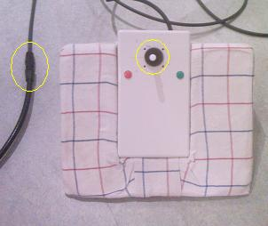
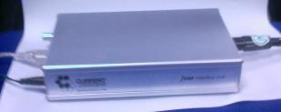
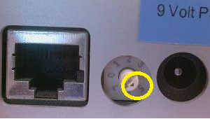
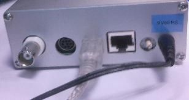
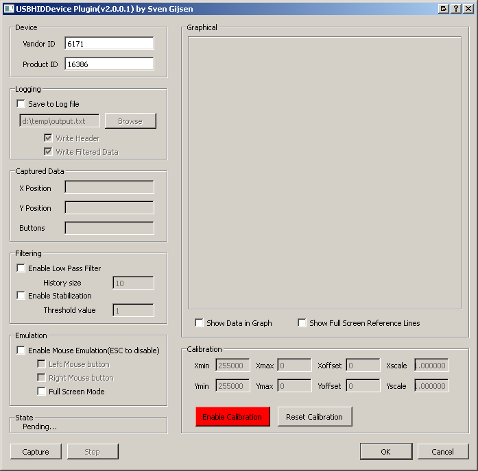
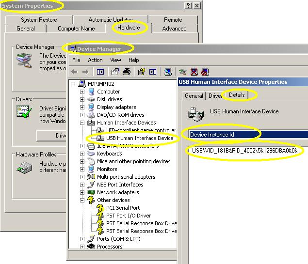

Introduction
The USBHID (USB Human Interface Device) Device Plug-in was originally written to create an fast direct interface between StimulGL and a optical joystick connected to a hardware device with a USB connection from http://www.curdes.com/. The USBHID plug-in can also be seen as an example of how to create/implement a custom Device plug-in for StimulGL. The plug-in extends the StimulGL script engine and implement a User Interface that can be accessed trough the StimulGL plug-ins menu. This User Interface is also used inside this document to describe all the capabilities.
The plug-in can calibrate/capture/filter and log the captured data. Furthermore it’s possible to emulate a standard mouse with the Joystick position; this makes it easy to use the device in any Stimuli presentation software like E-prime/Presentation by running the plug-in parallel as a separate thread.
Hardware
The USBHID Device Plug-in can capture the data-stream trough a USB connection from an HID hardware device. This data-stream is then parsed by the plug-in which expects the data-stream to be encoded with the use of a per defined protocol. Because this protocol is not universal we probably cannot use this plug-in to read other USB HID hardware than those who are using the manufacturers defined protocol (Programmers Joystick) at http://www.curdes.com/index.php/technical/Manual-005.
Data-stream protocol
With the rotary switch set to position 5 (Programmers Joystick), the output from the fORP interface is:
- higher baud (57600)
- higher resolution (11 bits in x and y direction)
- not compatible with standard built-in drivers (such as MOUSE.SYS).
In this mode 4 bytes are sent continuously. The packet structure is as follows:
Byte | d7 | d6 | d5 | d4 | d3 | d2 | d1 | d0 |
|---|---|---|---|---|---|---|---|---|
1 |
1 |
Left button |
Middle button |
Right button |
y10 |
y9 |
y8 |
y7 |
2 |
0 |
x6 |
x5 |
x4 |
x3 |
x2 |
x1 |
x0 |
3 |
0 |
y6 |
y5 |
y4 |
y3 |
y2 |
y1 |
y0 |
4 |
0 |
0 |
0 |
0 |
x10 |
x9 |
x8 |
x7 |
Standard Usage
The following sub-chapters describe the steps for a default usage of the plug-in.
Connection and calibration
First we need to connect and roughly calibrate (1st calibration step) the optical joystick because the optical cable signal signal strength may vary over time. Before we can roughly calibrate the joystick we have to make sure that the optical joystick is connected to the optical extension cable and that the joysticks shaft is centered and stays in this position during this first rough calibration, see below picture:

Now we con connect the optical extension cable to the electronic interface box:

Make sure that the Electronic Interface Mode Selection Wheel is positioned at number 5:

Connect the USB cable from the Electronic Interface to the Stimuli PC:

Disconnect (if not yet disconnected) the Power supply from the Electronic Interface (see above picture), and connect it back again; the Electronic Interface roughly then calibrates the device automatically during power start-up (first 2 seconds). Now all the cable connections and the first rough calibration is done.
Now we need to check whether communication between the joystick and the program is possible. To do this first start by opening the plug-ins User Interface:

We start with entering the correct Vendor and Product ID, these fields are already filled-in with the default and probably correct “Vendor ID” and “Product ID”. To check whether these values are correct we can check this on a Windows OS by:
- opening the System Properties and
- go to the Device Manager,
- open the USB HID Device and open the Properties,
- click on the Details tab,
- select Device Instance ID and check the VID and PID value from the string, see below picture:

Now we have everything setup to start the capture thread and read the joysticks position. Press the “Capture” button once. The programs state label should change from Pending…to HID Communication Active… Check/validate that the captured data is changing inside the “Captured data” frame when moving the joystick (only changes are captured). Press the “Stop” button, the programs status changes again back to Pending…The communication is now fully working and now we can further calibrate (step 2)the joystick. This (software) calibration captures the joysticks position and uses it to define the range of the joystick position (Min, Max and center point).
Select the “Show Data in Graph” and the “Show Full screen reference Lines” check-box, to show the results of the joystick movement inside a graph together with some reference lines. Select the “Enable Calibration” button, its back color turns green meaning that the calibration is now active! Press the “Capture” button again, the programs state changes from Pending…to HID Communication Active…in the status bar.
During this active calibration the plug-in reads the optical joystick data stream (X, Y position and button presses) and adapts the minimal and maximal value for X and Y found (see Calibration frame) during (calibration) capture. It’s therefore important to move the joystick during this calibration to the most/fully outer corners! The plug-in then stores these new calibration values in memory (it remains in memory as long the plug-in is open). To reset/clear the calibration data from memory you can press the Reset Calibration button.
During the calibration process you’ll notice that the small box inside the Graph (Graphical frame) moves together with the movement of the joystick. When the joystick is fully calibrated the joystick can move inside a circular area until the corners of the rectangle.

If the joystick is fully calibrated you can click the “Enable Calibration” button again to disable the calibration, the calibrated settings remain in memory as long the plug-in is running.
Press the “Stop” button to stop the capture thread again. By now the joystick is ready for use.
Mouse Emulation
If you want to activate the mouse (only xy-pointer at this release) emulation (during an active capture thread, see previous chapter) you should check the “Enable Mouse Emulation”. Because the joystick then interferes with the mouse movement you can press the keyboards “Escape” key again to disable this option/emulation.
The “Full screen mode” makes it possible to even point the mouse arrow to the outer corners of the screen trough mouse emulation with the optical joystick. This is possible because the circular movement area is the recalculated to fit around the rectangular screen area. If not set then only a circular area within the screen area can be covered with the mouse pointer. Full screen mode is also represented by the inner reference box inside the graph.
Data Filtering
To create a smooth transition of the movement of the mouse pointer you can check the “Enable Low Pass Filter” check-box. This enables the plug-ins low pass filtering capabilities by keeping track of a history of an amount of “History Size” captured records and use these to mean the X/Y signal to create a smooth transition.
Because the signal to noise ration of the optical joystick signal is pretty poor you may also select the “Enable Stabilization” check-box which will ignore minor captured movements over time (that occur due to the high noise level) and keep the mouse pointer at it’s current position. The threshold position is the amount of steps from a 11-bit signal (in the X and Y position of the joystick) which is ignored for the mouse emulation.
Data logging
You can also enable the data logging feature which writes the captured data to a log file for further usage. The Write Header option makes sure that the first line in this (tab delimited) file is a name header, making it easier to understand how the data is ordered. Write calibrated data writes the data after has been calibrated with all the current settings.